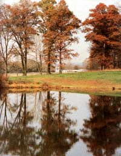
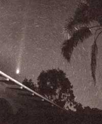

In much of North America, the annual blaze of fall foliage color is one of the most glorious of all natural phenomena. The western United States and Canada have their forests of gold-the aspens. But most famous of all is New England's palette of bright leaf colors (a "paint" of which considerable quantities run far south down the high ridges of the Appalachians). And of New England's trees, it is the maples that are best known and praised for their oranges and reds.
But New England's (and America's) greatest nature writer spent much of his essay "Autumnal Tints" praising another tree, which seemed to attract him as much as or even more than the maples. That tree is the scarlet oak.
It's easy to find copies of Thoreau's clas sic Walden at your local bookstore or library, but you may have to look harder to obtain a collection that contains his "Autumnal Tints" essay. Interestingly, Thoreau's Massachusetts is about the northern limit of the scarlet oak's range. It is seen down the coast to about Virginia and inland through the Carolinas and Georgia. Its range extends across much of the Midwest, too. But it is apparently not found high up in the Appalachians.
The scarlet oaks are among the last of the trees to change color and therefore stand out wherever they are-especially if you can climb a hill to look around. In his home region of northern Massachusetts, Thoreau says, the scarlet oaks reach their prime by about October 26, when other oaks' leaves have usually withered. The scarlet oaks, he writes, "have been kindling their fires for a week past, and now generally burst into a blaze." Most people have already gone in and "shut their doors, thinking that bleak and colorless November has already come, when some of the most brilliant and memorable colors are not yet lit."
But it is the scarlet oak's visibility amid the otherwise leaf-bare forests that Thoreau especially emphasizes: "When I rise to a hilltop, a thousand of these great Oak roses, distributed on every side, as far as the horizon! I admire them four or five miles off... This late forest-flower surpasses all that spring or summer could do."
Thoreau advises that to bring out the maximum redness in the leaves one should look from a distance when the sun is low (but it is now fairly low even in the middle of the day). The form of the tree is beautiful (he describes it as having the shape of a rose with a multitude of petals). Thoreau also praises the shape of the leaf: "What a wild and pleasing outline, a combination of graceful curves and angles! The eye rests with equal delight on what is not leaf and on what is leaf-on the broad, free, open sinuses [bays or scallops of the leaf's edge], and on the long, sharp, bristle-pointed lobes."
Lake-Effect Snowstorms
The Great Lakes together form the largest chain of fresh-water bodies in the world. They are also positioned at a rather northerly latitude and at the southern edge of mostly flat terrain extending all the way from the pole. It's understandable, then, that the lands due east of them are prone to spectacularly intense and huge snowfalls from lake-effect snowstorms.
In most American locales, February is noted as the great snow month, and you might suppose that November is too early for really big snowfalls anywhere in the lower 48 states. But lake-effect snowstorms depend on unfrozen lakes-so it is in November and December that most of them happen. How does a lake-effect storm occur? A storm moving in from the west may produce light snow before it reaches the lakes. But in crossing those vast and relatively mild bodies of water the storm loads up on moisture. Then, when the precipitation moves over the territories east of the lakes, the colder temperatures over land turn the rain back into snow: tons of snow.
Lightning may flash and thunder roll while this snow comes down at rates of up to 5 to 10 inches an hour. The great snow depths are remarkably localized. Although 70 inches of snow fell in one day on January 4-5, 1988, in Highmarket, New York, only 15 miles away there was less than 6 inches of snow! Interestingly, the maximum amount occurred about 30 miles east of Lake Ontario-the heaviest lakeeffect snows don't fall right on the eastern shores of the lakes.
A lot of people might suppose that the Great Lakes are too big to freeze up entirely. Actually, the southernmost and shallowest of the five, Lake Erie, does usually freeze over completely-after which Buffalo, New York, and Erie, Pennsylvania, are spared major lake-effect action. Lakes Superior, Huron, and Michigan normally get no more than about half frozen over. Lake Ontario has only frozen completely a few times since 1860, and in a typical winter is 85 percent ice-free. Its water does get colder as winter advances, but the "snow belt" east of it in upstate New York can experience huge lake-effect snows onward through the season.
Hale-Bopp and the Leonids
Many of our readers no doubt got a look at the amazing visitor to our skies this past March: Comet Hyakutake. Back on March 25, it passed closer to Earth than any fairly large comet had in 440 years. The fuzzy glowing head thus appeared huge-and on the best nights, as seen from out in the country, distinctly blue even to the unaided eye. The head and brightest tail were bright enough to be glimpsed from the centers of the largest cities without optical aid. And in rural areas the tail appeared longer than the Big Dipper, which it passed through majestically. (Some expert observers traced the faintest extension of the tail halfway across the sky!)
Certainly no comet has appeared as visually spectacular as Hyakutake since 1976 (and that year's Comet West was visible only in the few hours before dawn, so most of the public never got to see it). But now-this very fall-there is brightening in our sky a comet that may become as bright or brighter than Hyakutake for months and that will probably display a very much brighter, denser tail and a more brightly structured head. This comet is not coming anywhere near Earth but is expected to get so magnificent because it may simply be one of the largest, most active comets in all of history.
The grand approaching comet is Comet Hale-Bopp. It is named for the two amateur astronomers-Alan Hale and Tom Bopp-who independently discovered it back in July 1995, when the comet was still way, way out beyond the orbit of Jupiter.
I will be telling you more about this potential "comet of the century" in the months ahead-but first let me stress that no one can give us an absolute guarantee about the behavior of something as capricious as a comet. So I can only tell you what we are likely to see in October and November.
Comet Hale-Bopp should be visible to the naked eye by now to anyone who knows where to look for it on a moonless, clear country evening. My advice is to use binoculars, though, for these are a great assistance when conditions are less than superb and the object you're looking for is not yet brilliant. For detailed instructions on where to look, you can consult Sky & Telescope magazine at your local bookstore or library (or my new book, Comet of the Century, Springer-Verlag, due out in bookstores in November).
If you try to find Hale-Bopp over in the west in the few hours after dusk, be patient. It's more than likely that the novice observer will have to wait until the comet gets brighter before it is easy to locate.
On the other hand, if you see a Leonid meteor-a "shooting star" coming from the direction of Leo the Lion in the south sky-before dawn on November 17, you'll immediately know that you saw one. Their appearance is unmistakable. This year, there's a distinct chance that a strong Leonid shower will occur-maybe dozens of meteors in an hour from a country location. If you only see a few, don't be disappointed, though. The greatest chances of a Leonid "meteor storm" (thousands of meteors per hour!) will come in 1998 and 1999.
Almanac
Almanac for October and November 1996
October 1996 1 On this day in 1752, second severe hurricane in two weeks struck the Carolinas. (Some believed it was caused by the change from the Julian to Gregorian calendar in early September.)
3 Mercury at greatest morning elongation (18 degrees from the sun)-the best chance to see Mercury at dawn (low in the east about 45 minutes before sunrise) in 1996; at this dawn and next, close conjunction of brilliant Venus and Leo's bright heartstar, Regulus (look high in the southeast an hour before sunrise).
4 LAST QUARTER MOON, 8:06 A.M. EDT; St. Francis of Assisi's Day.
7 Moon fairly near Mars this morning.
8 Great Chicago Fire started, 1871.
9 Moon fairly near Venus this morning; Leif Eriksson Day.
12 NEW MOON, 10:16 A.M. EDT; partial eclipse of the sun, visible from parts of eastern Canada (see text).
13 150 years ago, a great hurricane caused major damage from the Florida Keys and Florida inland all the way to Pennsylvania.
14 Columbus Day (observed); Thanksgiving Day in Canada; Native Americans Day in South Dakota.
17 Uranus 5.7 degrees east of Neptune-the closest together they will be this year, and for almost two centuries to come. (Use binoculars and finder chart from April issue of Sky e'r Telescope magazine.)
18 Moon fairly near Jupiter this evening; Alaska Day; start of St. Luke's Little Summer.
19 FIRST QUARTER MOON, 2:10 P.M. EDT.
21 Orionid meteor shower at its peak before dawn this morning-look for these very swift, mostly dim "shooting stars" to fly out from the south around 4-6 A.M.
22 Sun enters astrological sign Scorpio, 7 P.M. EDT.
23 Moon near Saturn tonight; the swallows leave San Juan Capistrano.
25 Temperature hit -10° Fin Bismarck this day in 1919.
26 FULL MOON, 10:12 A.M. EDT-Hunter's Moon; four inches of snow fell in New York City this day in 1859.
27 Set clocks back one hour-at 2 A.M.-to switch from Daylight Saving Time to Standard Time.
29 This morning and next, golden orange Mars is near the similarly bright but bluish white star Regulus.
30 Sun leaves Virgo, enters Libra, 10 A.M. EST; Donora Smog Disaster: 20 people died from the effects of smog in Pennsylvania's Monongahela Valley over a five-day period in 1947.
31 Halloween (All Hallows Eve); Nevada Day. November 19961 All Saints Day; Samhain (pronounced "savin"); Mercury at superior conjunction with the sun.
2 All Souls Day.
3 LAST QUARTER MOON, 2:52 A.M. EST.
4 Will Rogers Day in Oklahoma; Great Vermont Flood of 1927 killed 84 people.
5 Election Day; Moon fairly near Mars this morning; Guy Fawkes Day.
7 Midway point of autumn; in 1940, the Narrows Bridge at Tacoma, Washington, started vibrating in wind and collapsed.
8 Moon fairly near Venus this morning.
9 In 1913, storm on the Great Lakes sank eight ore carriers, killing 200 people.
10 NEW MOON, 11:17 P.M. EST.
11 Veterans Day (originally World War I Armistice Day); Martinmas.
13 First cloudseeding experiment, in Massachusetts, produced snow flurries in Berkshires on this day in 1946.
14 Moon near Jupiter this evening.
15 This day in 1900, 45 inches of snow fell in 24 hours in Watertown, New York.
16 Watch for possibly quite strong Leonid meteor shower tomorrow morning before dawn.
17 FIRST QUARTER MOON, 8:10 P.M. EST.
18 Venus rather close to star Spica this morning.
19 Discovery Day in Puerto Rico.
20 Moon near Saturn this evening.
21 Sun enters astrological sign Sagittarius, 8 P.M. EST.
22 Sun enters constellation Scorpius, 3 P.M. EST.
24 FULL MOON, 11:11 P.M. EST-Frosty Moon or Beaver Moon; John F. Kennedy Day in Massachusetts; Pluto at conjunction with the sun.
25 St. Catherine's Day.
28 Thanksgiving Day (latest possible-Thanksgiving is held the fourth Thursday in November).
29 Sun enters Ophiuchus, 11 A.M. EST; Saturn's rings now tilted only 3 degrees from edge-on-the least we'll see them tilted for about a dozen years.
|
 a file photo |
 |
|